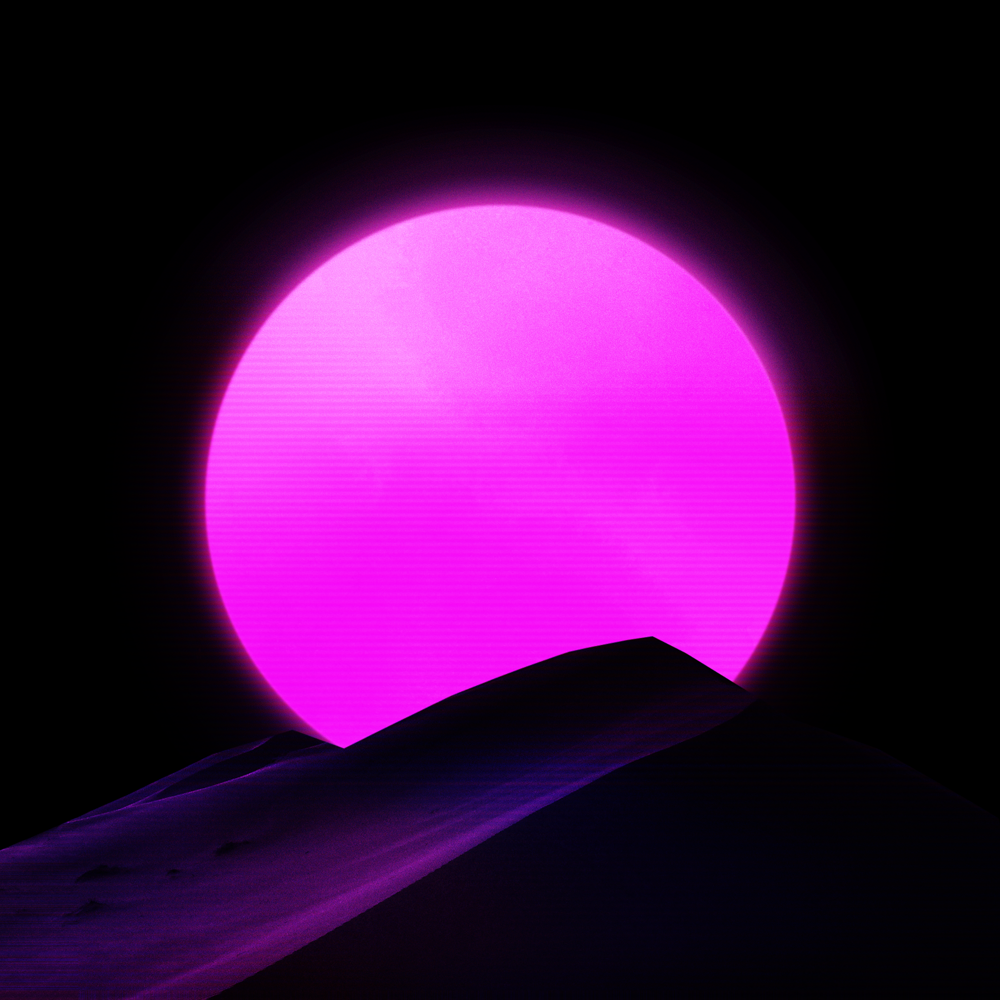
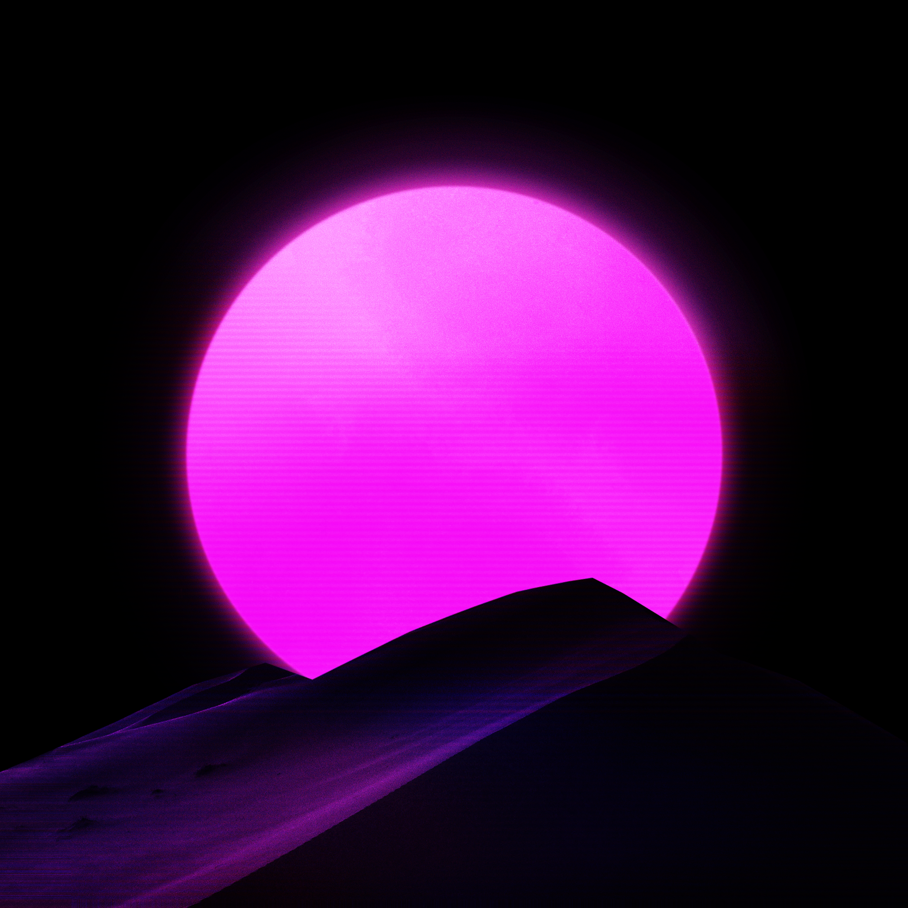
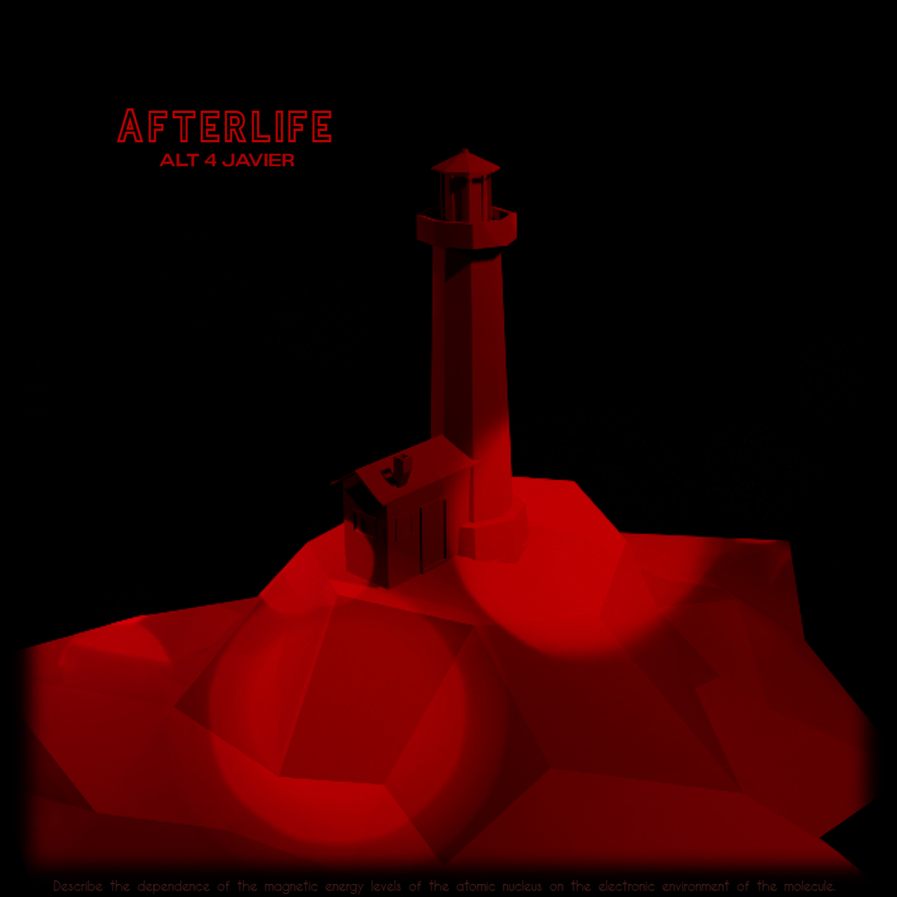
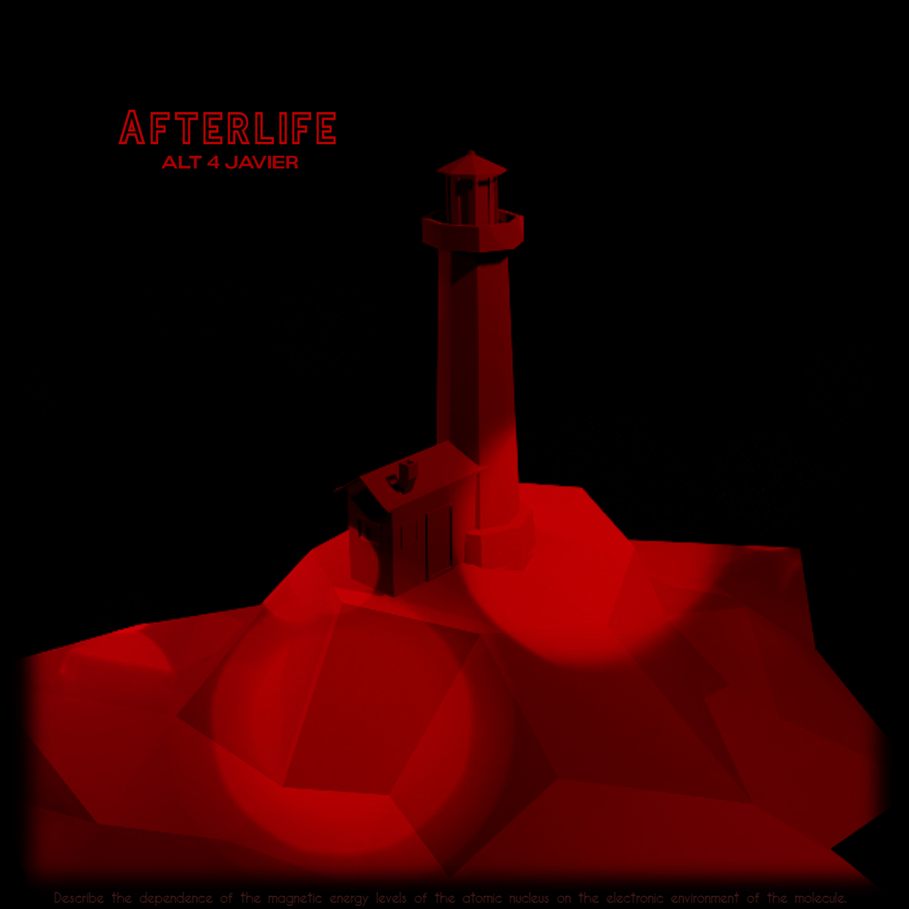

No one hears any sound the same way. Every emotional and intellectual response to a song is a tangled network of deep-seated memories and social pressures. The most banal hook can inexplicably make someone cry (THEORICALLY), a lead sound on top of a kick could trigger, instantly saturate the steps of a dancer (friends and ALL), while another is shaped in that very moment your future emotional response to music.
This Album carries memories, thoughts and feelings that "Alt 4 Javier" has and presents the possibility of inspiring moments of intense and heartbreaking nostalgia in one listener, and opening new neural pathways towards deep feelings in another.
I'm never gonna dance again
Guilty feet have got no rhythm
Though it's easy to pretend
I know you're not a fool
I should have known better than to cheat a friend
And waste a chance that I'd been given
So I'm never gonna dance again
The way I danced with you
Steps To Freedom
Single by Alt 4 Javier - from "No Visto A Las 99:99"
The last step for evolution and freedom, is only to learn that everything was learned with blood and sacrifice, traveling with clouds and red sky is nothing more than the speed force that reflects all the madness that you had in that hell, then a metamorphosis arrives that changes from step to step, impenetrable sound against the same, evolving your power and freedom thus giving the same response to the music.
and again Alt 4 Javier is back with the single "Steps To Freedom" giving a feeling of freedom with traces of hell and with the typical nostalgic melodies, opening a small neural path to deep feelings in another
within the speed force,
we are but survivors of madness
freedom against sadness
hate with love
But I'm fine now, this must have meant something to me,
will another technology arrive?
Tuda
Upcoming Album by Alt 4 Javier
Capturing the current state of mind of the world to perfection: the tension, the frustrating pace, the pent-up emotion and that feeling of utter longing for friends, family and normalcy to return.
The kick goes through the trees like a scythe, calling and drawing her closer. Coming from all directions, the low frequency glides through the forest like a low haze.
The primary metronomic pressure of the rhythm is entangled with its Melody. Sound is everywhere and it is impossible to fix it. There are few things that we can paste in our lives, one of these is memories, memories of life and memories of good times
Within this clear secret they are found, alone except for rotting leaves and creeping moss. You cannot swim to new horizons until you have the courage to lose sight of the shore. Here at home with a record that goes back to his unique way of painting contrasts of emotions.
Dark Melancholy
EP by Alt 4 Javier
Memora
Single by Alt 4 Javier - from "Dark Melancholy"
Reset
Single by Alt 4 Javier - from "Dark Melancholy"
Ever Now (Alt 4 Javier Remix)
#CollabGamers
The #CollabGamers is proyect made by Alt 4 Javier, It is about making music for Youtubers and / or Streamers which are not paid, the project will close in September 2021.
If you want to know why it will close in September 2021,


 



 
